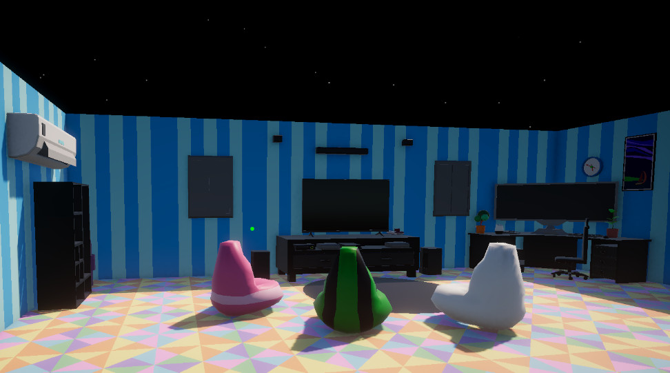

Echo Systems Lab - Systems Overview
A modular Unity systems lab built around a hub, mission terminal, weapon trials, save progress, player feedback, audio routing, and reusable gameplay subsystems.
- Unity 6
- C#
- Systems Architecture
- In Development